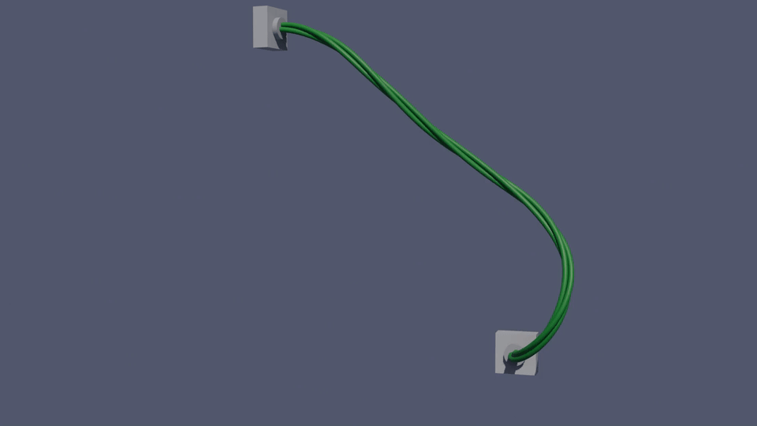
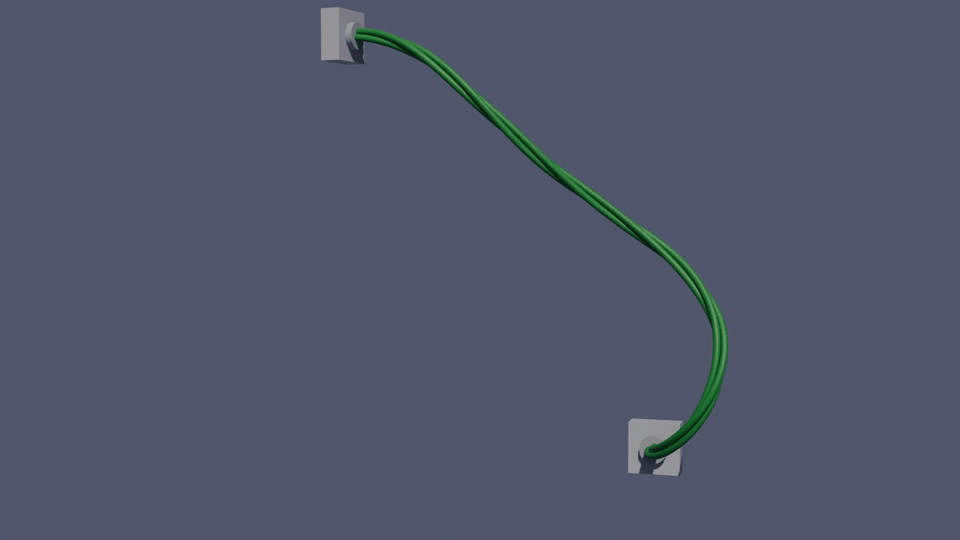
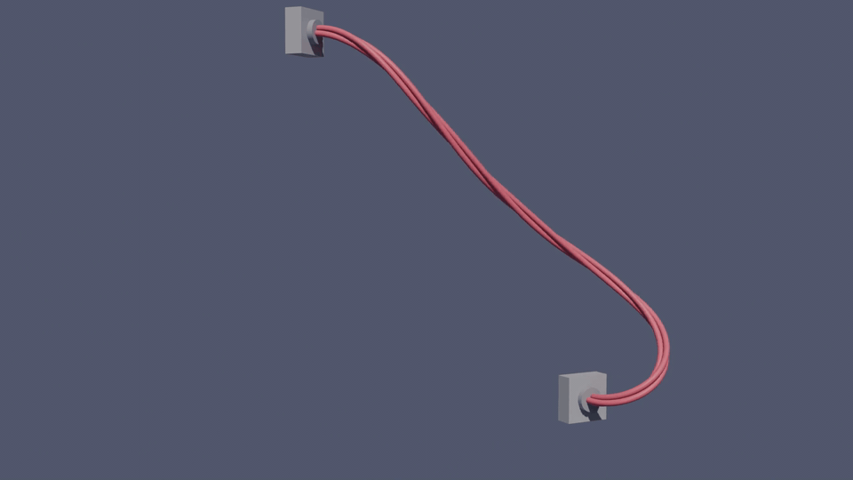
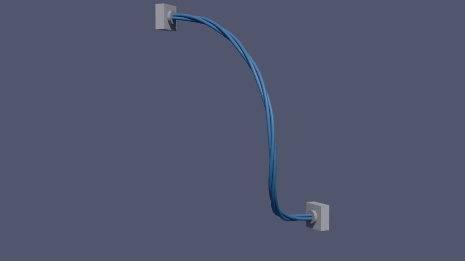

Supplementary material to the poster
Simulation and Analysis of Cable Assemblies
Eindhoven University of Technology
29th Engineering Mechanics Symposium
Hotel Papendal, Arnhem, 22–23 October 2026
Animated Eigenmodes
Design A
Design B
Design C









